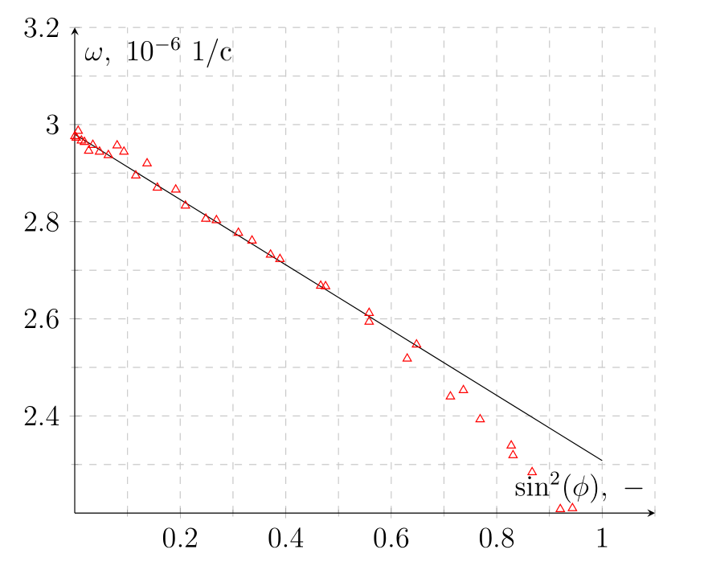
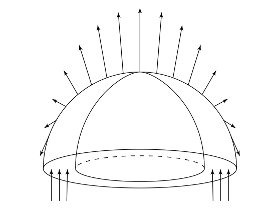
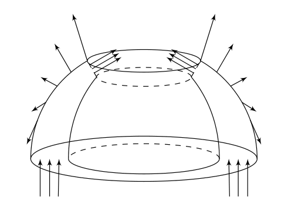
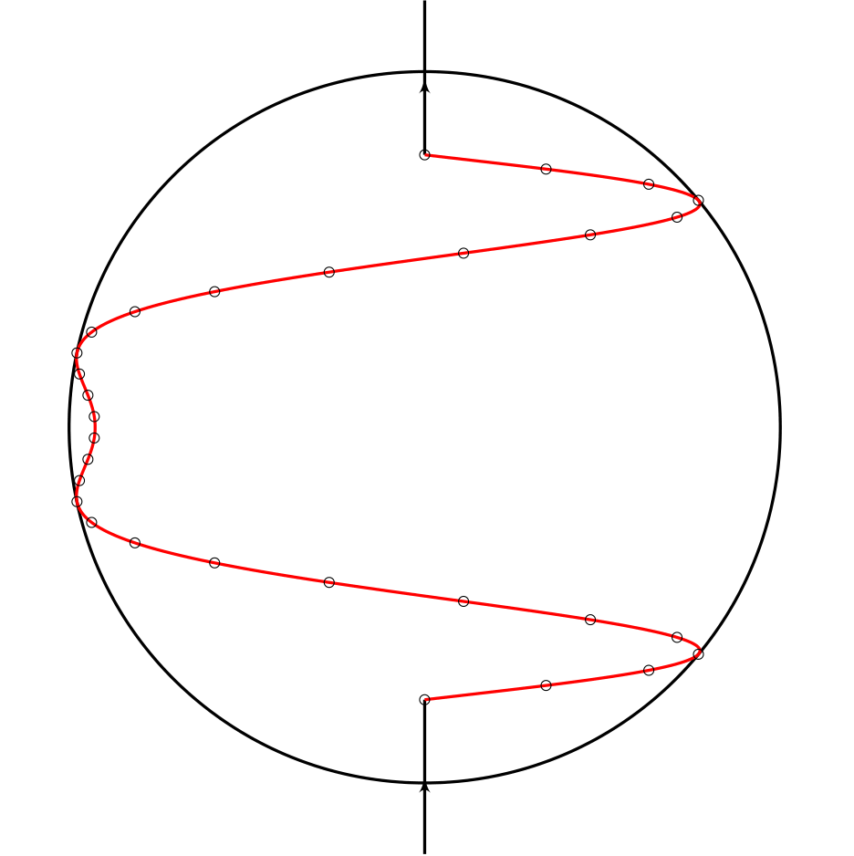
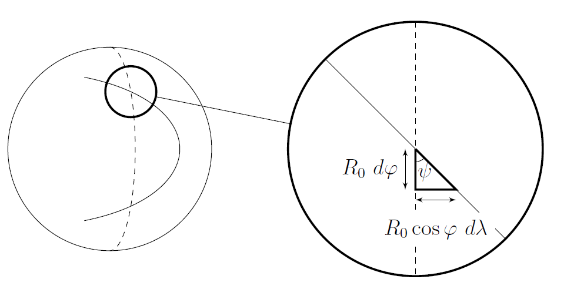
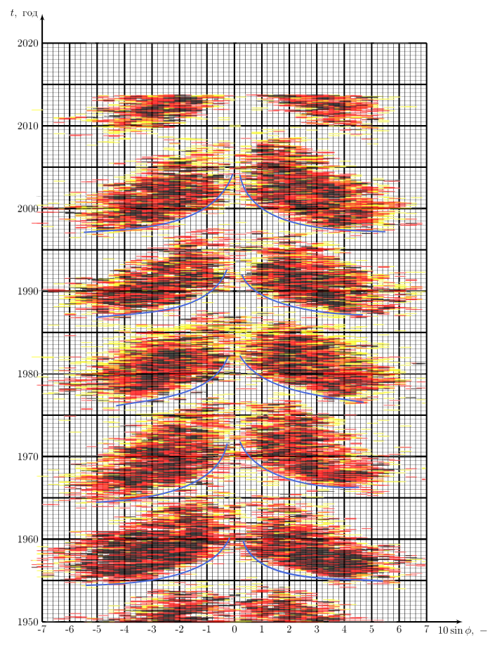

X22 (2022) — English translation
Let's build a graph $\omega(\sin^2 \varphi)$. We draw an approximating line along the initial section, from which we find the parameters $a$ and $b$.

From the graph we find the angle $\varphi_{\text{max}}$ after which the points significantly deviate from the straight line.
Let us write the field of the magnetic dipole at latitude $\varphi$: \[ \vec{B}(\varphi) = \frac{\mu_0}{4\pi} \frac{\mathfrak{M}}{R_0^3} (3\vec{n} \sin \varphi - \vec{z} ) \] Projecting this onto the axes corresponding to $r$, $\varphi$ and $\lambda$ we obtain:
Let's choose a surface stretched over magnetic lines. Then the magnetic field flux through the equatorial section inside the Sun is equal to the flux through one of the hemispheres.
Thus $2\pi R_0 H_0 B_e = \Phi_0$ means $B_e = \dfrac{\Phi_0}{2\pi \xi R_0^2}=53~\text{mT}$. On the other hand, we can calculate the flux $\Phi_0$ by integrating the dipole field: \[ \Phi_0 = \int\limits_0^{\pi/2} B_{0,r} 2 \pi R_0^2 \cos \varphi d\varphi = \frac{\mu_0 \mathfrak{M}}{R_0} \int\limits_0^{\pi/2} \sin \varphi \cos \varphi d\varphi = \frac{\mu_0 \mathfrak{M}}{2R_0}. \] Substitute this into the previous formula and get the following:

Now we will also select a surface stretched over magnetic lines. Only now it will extend from the equator to the desired latitude $\varphi$.
Then to calculate $B_\varphi$ you need to find the flux $\Phi(\varphi)$ of the magnetic field of the dipole through the part of latitude from $0$ to $\varphi$. This is the integral already familiar to us: \[\Phi(\varphi) (\varphi)= \int\limits_0^{\varphi} B_{0,r} 2 \pi R_0^2 \cos \varphi d\varphi = \frac{\mu_0 \mathfrak{M}}{2R_0} \sin^2 \varphi. \] The flux through the surface is equal to 0: \[ \Phi(\varphi) + 2\pi R_0 \cos \varphi \, H_0 \cos^2 \varphi\, B_\varphi(\varphi) = \Phi_0, \] then: \[ 2\pi\xi R_0^2 \cos^3 \varphi \,B_\varphi (\varphi) = \Phi_0 \cos^2 \varphi. \] So

Let the magnetic line pass through the points $(\pm\varphi_0,\lambda_0)$, where $\varphi_0=50^\circ$, $\lambda_0=0^\circ$. Then its equation in angular coordinates is given as follows: \[ \lambda = \omega(\varphi)t = (a - b\sin^2 \varphi)t \]
Points with angular coordinates in the plane have the following coordinates: \[ \begin{cases} x = R \cdot \sin \lambda\, \cos \varphi\\ y = R \cdot \sin \varphi \end{cases} \] Let’s draw a line through the recalculated points:

From the picture it is clear that \[ \tan \psi = \frac{d \lambda}{d \varphi} \cos \varphi = 2bt \sin \varphi \cos^2 \varphi, \] is from

The magnetic field flux through the surfaces discussed in Part B should not change, so $B_\varphi=\text{const}$. Then \[ B = \frac{B_\varphi}{\cos \psi} \] and therefore
In the approximation $\sin \psi \approx 1$ it is true that $\tan \psi = 1/\cos \psi$, therefore: \[ B = \frac{B_e \tan \psi}{\cos \varphi} = 2B_e bt \sin \varphi, \] means the type of curve, $\varphi(t)$, on which spots appear on the Sun is described by the following expression: \[ B_\text{crit} = 2B_e bt \sin \varphi, \] i.e. its linearization is as follows: \[ t = \frac{A}{\sin 2\varphi} , \] where $A = \frac{B_{\text{crit}}}{B_eb}$ and $t$ are counted from the beginning of the 11-year solar cycle (one “butterfly” on the Maunder diagram). By constructing the envelope on the Maunder diagram, we obtain the dependence $t(\sin 2\varphi)$ for critical points (appearance of spots). From it we find $A$, and then $B_{crit}$.

We find the period as the time between two points with the same “phase” divided by the number of cycles: $T = 11~\text{year}$. Next, this number must be increased by 2 times, since after one cycle the field changes direction.